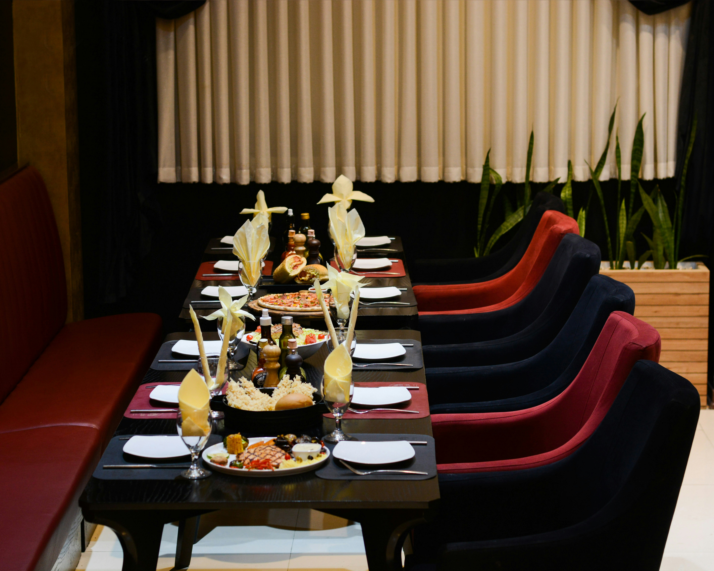

Our story is deeply rooted in the belief that a truly memorable dining experience goes far beyond just what is on the plate. Welcome to SG's Steakhouse, where culinary passion meets an unforgettable atmosphere. We pride ourselves on serving mouthwatering, high-quality meats, hearty burgers, and decadent desserts, including our delightful ice cream selections. But as we like to say around here, not "everything" is about food—we have drinks too! Our founders envisioned a vibrant gathering place where friends, family, and food lovers could come together to celebrate life's best moments. Because we believe in engaging all your senses, music is a big part of our restaurant's soul. We invite you to sit back, relax, and enjoy the carefully curated music while you eat. Whether you are joining us for a perfectly seared steak dinner, stopping by for a casual gourmet burger, or simply looking to unwind with a refreshing drink and great tunes, SG's Steakhouse is your ultimate destination. Join us at our table, soak in the warm and welcoming energy, and let us treat you to an incredible feast that you will want to experience time and time again.
| Day | Hours |
|---|---|
| Monday - Thursday | 11:00 AM - 10:00 PM |
| Friday | 11:00 AM - 3:00 PM |
| Saturday | Closed |
| Sunday | 12:00 PM - 11:00 PM |